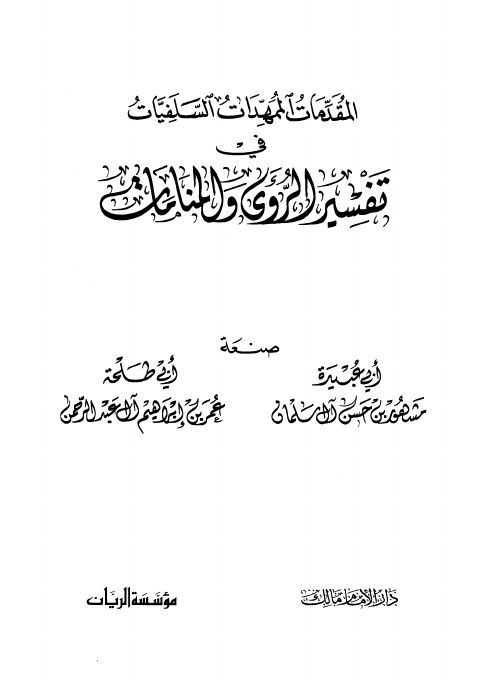

Downloads need an internet connection.
المقدمات الممهدات السلفيات في تفسير الرؤى والمنامات
Authors: أبو طلحة عمر بن إبراهيم آل عبد الرحمن مشهور بن حسن آل سلمان
Publishers: مؤسسة الريان دار الإمام مالك
**▫️ العنوان: المقدمات الممهدات السلفيات في تفسير الرؤى والمنامات** ▪️ المؤلف: #مشهور_بن_حسن_آل_سلمان • #أبو_طلحة_عمر_بن_إبراهيم_آل_عبد_الرحمن ▫️ الناشر: #دار_الإمام_مالك • #مؤسسة_الريان ▪️ تاريخ النشر: 1428هـ 2007م ▫️ بلد النشر: أبو ظبي، #الإمارات • بيروت، #لبنان ▪️ الطبعة: 2 ▫️ عدد الأجزاء: 1 ▪️ الصفحات: 580 ▫️ نوع الوعاء: #كتاب ▪️ التصنيف الرئيسي: #العلماء_والمفكرون ۪